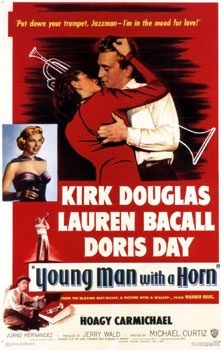
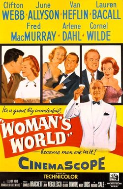
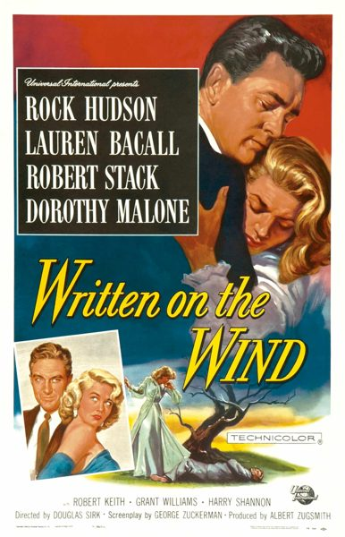
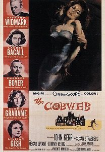
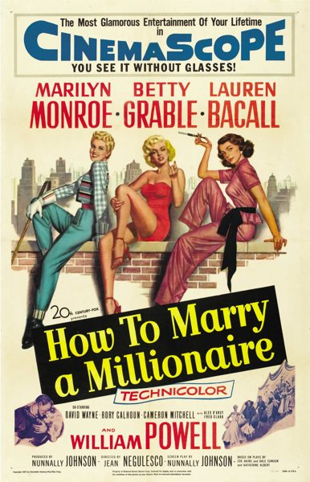

THE STANFORD THEATRE
Now Showing
·
Upcoming
·
Past
·
Search
October 17 - November 21, 2014
Remembering Lauren Bacall
8 bills
October 17 - 19
To Have and Have Not (1944)
96 min
Key Largo (1948)
100 min
October 22 - 23

Young Man With a Horn (1950)
112 min

Woman's World (1954)
94 min
October 24 - 26
The Big Sleep (1946)
114 min
Dark Passage (1947)
106 min
October 29 - 30

Written on the Wind (1956)
99 min

The Cobweb (1955)
124 min
October 31 - November 2

How to Marry a Millionaire (1953)
95 min
Designing Woman (1957)
118 min
November 7 - 9
Gone With the Wind (1939)
238 min
November 10 - 16
Gone With the Wind (1939)
238 min
November 17 - 21
Gone With the Wind (1939)
238 min